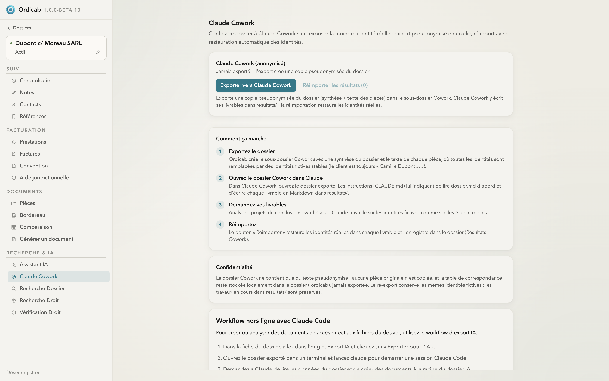

Intelligence artificielle
IA Cowork (agents externes)
IA Cowork confie un dossier à un agent externe — par exemple Claude Code — tout en préservant la confidentialité. Ordicab exporte une copie pseudonymisée du dossier, l'agent travaille dessus, puis vous réimportez les livrables et Ordicab restaure les identités réelles.

Claude Cowork — export pseudonymisé du dossier, mode d'emploi et garanties de confidentialité
Comment ça marche
- Exporter le dossier — Ordicab crée un sous-dossier « Cowork » : une synthèse, la liste des pièces, et les identités remplacées par des marqueurs neutres.
- Ouvrir le dossier dans l'agent — un fichier d'instructions (
CLAUDE.md) indique à l'agent où regarder et quoi produire. - Demander vos livrables — analyses, projets de conclusions, synthèses : l'agent travaille sur les marqueurs, jamais sur les vraies identités.
- Réimporter — Ordicab restaure les identités réelles dans les livrables et les enregistre dans le dossier.
Confidentialité
Le dossier Cowork ne contient qu'un export pseudonymisé : aucune pièce originale n'est copiée, et la table de correspondance reste sur votre poste. L'export conserve les mêmes marqueurs d'un travail à l'autre, pour que les livrables restent cohérents.
Workflow hors ligne avec Claude Code
Pour créer ou analyser des documents en accès direct aux fichiers exportés, ouvrez le dossier Cowork dans un terminal et lancez votre agent. C'est le mode adapté aux traitements volumineux ou outillés, complémentaire de l'assistant intégré.